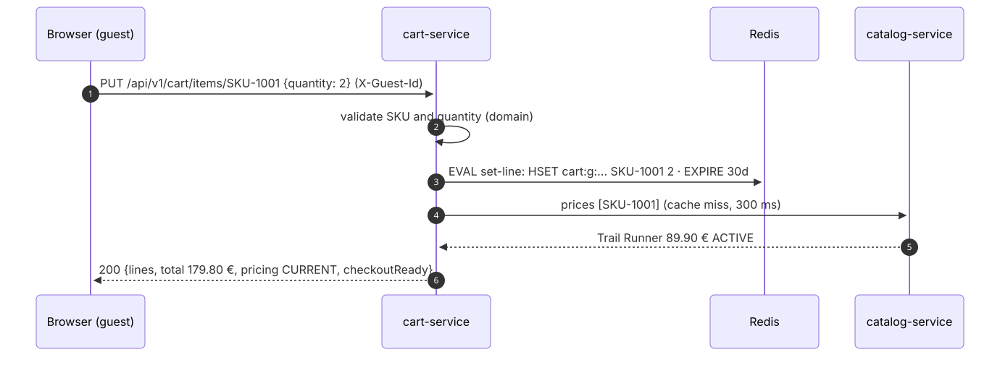
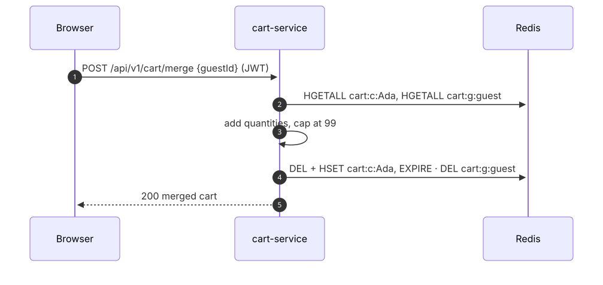

cart-service: low-level design#
Part of the e-commerce system design. Animated version: walkthrough.
1. Responsibilities#
| Does | Does not |
|---|---|
| Keep carts for guests and customers | Hold stock (only checkout reserves) |
| Price lines from the catalogue on every read | Store prices: they would go stale |
| Merge a guest cart on sign-in | Create orders |
| Hand order-service a priced snapshot; empty the cart after the order |
2. Guarantees#
| Guarantee | How |
|---|---|
| Prices are current at checkout | The snapshot is priced on the spot; if the catalogue cannot confirm prices it answers 503 instead of guessing |
| The cart stays usable when the catalogue is down | Reads fall back to pricing: PENDING: lines are shown and editable, totals are hidden, and checkout is blocked |
| No orphan keys | Each line write and its 30-day expiry happen in one Lua script |
| The cart is emptied exactly once per order | SET NX dedupe on the event id |
| Bounded carts | 1–99 per line, at most 100 lines |
3. Module diagram#

4. Interaction diagram#

5. Sequences#
Add to cart and read it back#

Sign in: merge the guest cart#

6. Data model (Redis)#
| Key | Type | Value | Expiry |
|---|---|---|---|
cart:c:<customerId> |
hash | SKU → quantity | 30 days after the last change |
cart:g:<guestId> |
hash | SKU → quantity | 30 days after the last change |
cart:seen:<eventId> |
string | 1 |
14 days |
Prices live only in the in-process Caffeine cache (30 s, at most 100 000 SKUs), never in Redis.
7. Scaling and performance#
- Pods: stateless, 2–10 replicas.
- Redis: a cart read is one
HGETALLand a write is one script call, both well under a millisecond. Redis Cluster shards carts by key hash. - Catalogue calls: pricing fetches only the SKUs missing from the cache, in one request. At steady state most reads never call the catalogue.
8. Failure handling#
| Failure | Behaviour |
|---|---|
| catalog-service down or slow | Breaker opens; carts shown with pricing: PENDING; snapshot answers 503 PRICING_UNAVAILABLE, so order-service answers 503 |
| Redis down | Cart requests fail fast (200 ms command timeout) with 503; nothing else is affected |
Duplicate OrderConfirmed |
Dedupe key exists → skipped (a new cart started after the order is kept) |
9. Tests#
| Test | Kind | Proves |
|---|---|---|
CartTest |
domain | Set and remove lines, validation, merge with cap, owner keys |
CartServiceTest |
application | Pricing, inactive products block checkout, degraded pricing, guest merge, clear-once |
HexagonalArchitectureTest |
ArchUnit | Layering |
CartContainersIT |
Redis + Kafka + fake catalog over HTTP | Guest cart priced and stored with expiry, merge on sign-in, snapshot; catalogue outage → PENDING and 503 snapshot; OrderConfirmed empties the cart; validation and auth |